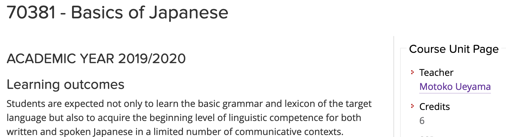
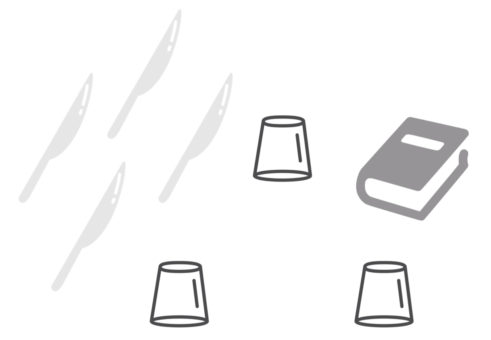
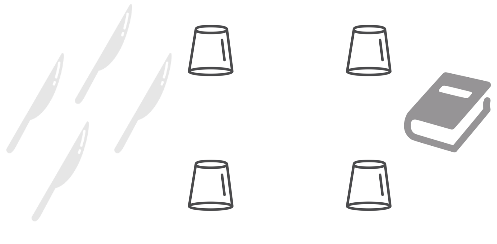

Describe in one word what you think this course is about
Goal: how to use a language to communicate with and instruct an information-processing agent
Computer Science notions: algorithms, data structures, and algorithmic techniques
Language for communication: Python (yes, it is a programming language)
Some whispers of despair:
algorithms, computations, programming, etc., are something which I cannot handle – indeed, I did not like mathematics at the high school
I am not able to abstract a situation by using formal tools since I am not a formal person
I cannot learn a programming language
These are just prejudices
Several of the things the book introduces are something that all of us already learned and digested during our life - it is only a matter of identifying them again to reuse them consciously
Intelligence is a muscle, it can be developed - we can learn anything, including Computer Science topics, despite what others say
More info in: Dweck, C. (2006). Mindset: The New Psychology of Success. Random USA. ISBN: 978-0345472328
A programming language is a language, such as Italian and English - we need time and practice to learn it properly
Suggested mindset: be an hackerone who enjoys the intellectual challenge of creatively overcoming or circumventing limitations
We don't trust you!
OK, then see what it (has) happened
Bachelor:
History
Bachelor:
Humanities
Bachelor:
Information Science for Management
Did some of you have experienced any of the following issues in the past? – Raise your hands if you were obliged:
to buy one or more books
to attend mandatorily a large part of the course for attending the final exam
not to participate to an exam session for some informal rule imposed by the professor
not to receive the maximum score if you attended the exam without attending the lectures
Let's see the rules of this course
Two free text books are provided, and additional material can be found on the GitHub repository of the course
If you cannot attend, do not attend (even if attendance is recommended: you can ask questions)
At least six exam sessions per academic year
Max score one can obtain is 36 (out of 30)
Computational Thinking and Programming book (official book of the course - it includes more than 100 exercises with keys!) + accompanying book How To Code in Python
All the material (including slides) is available in the GitHub repository of the course at https://github.com/comp-think/2021-2022/
Have you found a mistake in the official book? Please write me an email at silvio.peroni@unibo.it, or comment it directly on Google Docs
We use a Signal group for communicating with each other
Signal is a cloud-based mobile and desktop messaging app with a focus on security and speed, it is an open source software, and can be used in any device (it has been developed for mobile and desktop devices)
Invitation link to join the group:
https://signal.group/#CjQKICS9Jct3jXhbC2MvbfZ8NWbdDes1cCdcg-ylMGTLBzeEEhBHzCfdCxp6djhSHHrErD2k
Note: I need to approve each request by hand
The course has its own Twitter account: @UniboCompThink
Twitter will be used to highlight interesting articles and initiatives about computational thinking, and to share the various topics addressed during the course so as to provide the materials to anyone can be interested
We will use the GitHub repository of the course for a series of activities, such as exercises and raising issues
Thus, please, create a new account on GitHub: https://github.com/join
Once logged into GitHub, go to the issue page of the course repository, and then feel free to add and respond to issues there
A very introductory guide to GitHub can be find online
Theoretical part (30 hours), where I will introduce all the notions related to the course - no computer needed: 15 lectures of two hours each (today included)
Practical sessions, where Bruno Sartini will be available for helping you in the issues that may arise during the course (e.g. solving exercises) - use Signal for coordination (e.g. topic to address and when)
Laboratorial part (12 hours), where Ivan Heibi will have some practical lectures on programming languages - computer needed here
Theory: it introduces the tools for doing something - e.g. vocabulary and syntax of a language
Practice: it addresses assignments to enable people to learn and understand the correct way to use such tools - e.g. using the language vocabulary and syntax to write sentences to express a particular idea or situation
Laboratory: a workshop run by someone that enables one to use the tools learned to understand advanced concepts and to build wonderful (and complex) artifacts - e.g. writing a novel
| October | November | December | |||
|---|---|---|---|---|---|
| 11/10/21 09:30-11:30 | Introduction to the course | 08/11/21 09:30-11:30 | Laboratory | 01/12/21 09:30-11:30 | Dynamic programming algorithms |
| 13/10/21 09:30-11:30 | Introduction to Computational Thinking | 10/11/21 09:30-11:30 | Organising information: unordered structures | 06/12/21 09:30-11:30 | Organising information: trees |
| 15/10/21 12:30-14:30 | Algorithms | 15/11/21 09:30-11:30 | Laboratory | 13/12/21 09:30-11:30 | Backtracking algorithms |
| 18/10/21 09:30-11:30 | Laboratory | 17/11/21 09:30-11:30 | Recursion | 15/12/21 09:30-11:30 | Organising information: graphs |
| 20/10/21 09:30-11:30 | Computability | 22/11/21 09:30-11:30 | Laboratory | 20/12/21 09:30-11:30 | Greedy algorithms |
| 22/10/21 12:30-14:30 | Programming languages | 24/11/21 09:30-11:30 | Divide and conquer algorithms | ||
| 25/10/21 09:30-11:30 | Organising information: ordered structures | 29/11/21 09:30-11:30 | Laboratory | ||
| 27/10/21 09:30-11:30 | Laboratory | ||||
| 29/10/21 12:30-14:30 | Brute-force algorithms | ||||
A non-mandatory workshop (immediately after the last lecture, e.g. 21 December), where the students are asked to organise themself in groups of 3-4 people (max. score: 4)
A final written examination (max. score: 32) - when:
Total max. score: 36 (32 without the workshop) out of 30
As you know, this course is just a module of an Integrated Course (I. C.)
Computational Management of Data (Integrated Course)
Module 1: Computational Thinking and Programming (this course!)
Module 2: Data Science (second semester course, taught by me)
You can register only the final grade of the Integrated Course, which is computed as the average of the final scores of the two modules (max. 30L each module)
Usually, during one of the last lectures of the course, you will be asked to fill-up a questionnaire on the organisation of the course and related stuff - it is anonymous, of course
Please, do it carefully and honestly, since it is one of the most important inputs I will have to understand what can be improved in the next year course
The fact that the course of this year is slightly different from the one held during the previous year one is mainly due to the comments I have received through these questionnaires

Do you think that attending only to all the classes of a 6 credit course (i.e. 30 hours) on a foreign language is enough to master its basics?
Learning a programming language is like learning a new language: you need to practice it (a lot) to master it properly
Umberto Eco (1980). The Name of the Rose. Available online
In the face of some inexplicable facts you must try to imagine many general laws, whose connection with your facts escapes you. Then suddenly [...] you perceive a line of reasoning that seems more convincing than the others. You try applying it to all similar cases [...] and you discover that your intuition was right.
There is no single solution to a given problem, and the best one can be found only trying (and making mistakes, and trying again and again) more than one approach
Stephen Toulmin (1958). The Uses of Arguments. Available online
The purpose of these studies is to raise problems, not to solve them
Please do ask questions
There are no stupid questions
My answers can be odd though, sometime
Thus, in order to avoid such odd answers, I could ask you to be patient and wait for the next lecture, so as to provide you with the best possible answer ever
thinking
Computational Thinking and Programming
Understanding how your thinking mechanisms work and training you in been flexible and reactive while thinking can be achieved only by thinking about something
Thus, let us do a couple of experiments!

Material:
3 glasses
4 knives
1 book
Setting:
the glasses as vertexes of a triangle of equal sides
the base of each glass is separated from the other by the lenght of a knife
Using the knives, creating a platform on top of the glasses
The knives used must not touch the ground
The platform must support the weight of the book
Approaching the solution may be difficult if there is no pattern provided by experience
It is important to analyse the situation to see if all the material available is useful, leaving out everything does not really help
Trial-and-error prodedure may be effective

Material:
4 glasses
4 knives
1 book
Setting:
the glasses at a corner of a square
the base of each glass is separated from the other by the lenght of a knife
Using the knives, creating a platform on top of the glasses
The knives used must not touch the ground
The platform must support the weight of the book
Recognising essential similarity of a problem to one already solved makes the problem easier to solve
Experience is much more valuable if some general principle is derived from it
Use of patterns provided by experience is the most rapid way of solving problems
Can you devise a general principle that can be use to solve both the situations introduced in the previous experiment?
These kinds of thinking exercises you performed today will characterise the entire course
Concepts such as abstraction, trial-and-error learning, prior experience, deriving general principles, practice, are key factors when learning a new language (including a new programming language)
Note: the two thinking experiments with glasses and knives introduced in this opening lecture come from the book The 5-Day Course in Thinking by Edward de Bono.